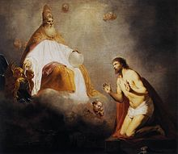

1683 SS022 The right hand of God 主上帝正手
| 簡介
Praise
God, All You Nations (Da n’ase) (Psalm 117) |
| This paraphrase of Psalm 117 comes
from Ghana and was originally created in the Twi language.
Paradoxically, this shortest of all psalms is universal in scope, which
makes it especially appropriate to sing in the words and music of people
from another part of the world. |
|
|
119 主全能右手 The right hand of God is writing in
our land
|
|
1 The right hand of God is writing in our land,
writing with power and with love,
our conflicts and our fears,
our triumphs and our tears
are recorded by the right hand of God.
2 The right hand of God is pointing in our land,
pointing the way we must go,
so clouded is the way,
so easily we stray,
but we're guided by the right hand of God.
3 The right hand of God is striking in our land,
striking out at envy, hate, and greed.
Our selfishness and lust,
our pride and deeds unjust,
are destroyed by the right hand of God.
4 The right hand of God is healing in our land,
healing broken bodies, minds, and souls,
so wondrous is its touch
with love that means so much,
when we're healed by the right hand of God.
5 The right hand of God is planting in our land,
planting seeds of freedom, hope, and love.
In these Caribbean lands,
let people all join hands,
and be one by the right hand of God. |
1.
主上帝正手佇咱中間寫字，寫出仁愛權能的話；
咱衝突及失敗，咱勝利及目屎，佇主上帝正手攏有記載。
2.
主上帝正手佇咱中間指出，指出咱應該行的路；
雖烏暗霧罩倚，真容易行歪斜，佇主上帝正手咱受引導。
3.
主上帝正手佇咱中間攻擊，攻擊嫉妒、貪戀、怨恨；
咱自私及自利，咱驕傲及不義，佇主上帝正手攏受攻擊。
4.
主上帝正手佇咱中間扶持，扶持著觸跋倒的人；
祂認得咱的名，對見誚中得赦，佇主上帝正手咱受扶持。
5.
主上帝正手佇咱中間醫治，醫治破碎肉體、心靈；
祂安慰真奇妙，祂疼痛算bōe了，佇主上帝正手咱受醫治。
6.
主上帝正手佇咱中間栽種，栽種自由、向望、仁愛；
願世界眾子民同徛起，得相親佇主上帝正手成做一體。
|

1683e SS022 The right hand of God
https://www.weekofprayer.ca/sites/default/files/6%202018%20WPCU%20Hymn%20Suggestions%20EN.pdf

|
| |
|
http://hymn.pct.org.tw/Hymn.aspx?PID=P2011081500005
聖詩 022 主上帝正手
原文： The right hand of God調名： RIGHT HAND OF GOD
韻律： 11 8 6 6 10作詞者： Patrick Prescod, 聖文森，1973
作曲者： Noel Dexter,牙買加，1973
Patrick Prescod was born in St. Vincent and the Grenadines. He
was a virtuosic pianist. He studied at Trinity College of Music in London, then
returned to St. Vincent and the Grenadines, taught music, led The Kingston
Chorale and Cantemus, and worked as the Music Director for the Education
Ministry from 1979-1982. He edited the Caribbean hymnal Sing A New Song
No. 3. Prescod tried to integrate the familiar cultural features,
rhythms, and musical forms into the unfamiliar context of worship.
Dianne Shapiro
參考經文： 出埃及記15:6–8 , 詩篇48:10–10 , 詩篇110:5–5
1.
主上帝正手佇咱中間寫字，寫出仁愛權能的話；
咱衝突及失敗，咱勝利及目屎，佇主上帝正手攏有記載。
2.
主上帝正手佇咱中間指出，指出咱應該行的路；
雖烏暗霧罩倚，真容易行歪斜，佇主上帝正手咱受引導。
3.
主上帝正手佇咱中間攻擊，攻擊嫉妒、貪戀、怨恨；
咱自私及自利，咱驕傲及不義，佇主上帝正手攏受攻擊。
4.
主上帝正手佇咱中間扶持，扶持著觸跋倒的人；
祂認得咱的名，對見誚中得赦，佇主上帝正手咱受扶持。
5.
主上帝正手佇咱中間醫治，醫治破碎肉體、心靈；
祂安慰真奇妙，祂疼痛算bōe了，佇主上帝正手咱受醫治。
6.
主上帝正手佇咱中間栽種，栽種自由、向望、仁愛；
願世界眾子民同徛起，得相親佇主上帝正手成做一體。
聖詩簡介： 22 主上帝正手
英語：The right hand of God
牙買加的音樂風格結合了拉丁美洲浪漫的旋律與非洲活潑的節奏，蘊藏著一
股豐沛、熱情的能量，切分節奏是整曲音樂的靈魂，從頭到尾須以二二拍子的感
覺來指揮和唱頌，可以加入鼓、沙鈴或其他的打擊樂器，以增添活潑的氣氛，
其切分節奏為： 1· 1· 1 | 1· 1· 1（即將每小節8 個八分音符分成3＋3＋2 三組的節
奏）。
歌詞內容宣認上帝是人類歷史的主宰，詩篇98 篇1 節b 說：「因為他行過奇
妙的事；他的右手和聖臂施行救恩。」
本詩透過六個有力的動詞描述上帝在寫字、指點、攻擊、扶持、醫治、栽種，
形塑出又真又活的上帝是今日仍富行動力的神。
各節重複使用「主上帝正手佇咱中間」的行動，強化上帝具掌管世界的過去、現
在及未來的歷史、並人類一切活動的大權能。每一個動詞的後面均很明確地敘述
上帝積極行動的內容，唱時不要讓會眾被音樂的魅力所吸引而本末倒置，而是要
讓他們曉悟每一節的內容，尤其最後一節謂上帝在人群中栽種自由、盼望和仁
愛，在此指出上帝創造的理想，乃一幅生命共同體相互友愛、和睦相處的美景，
故適用於今日任何關心現代議題的聚會，尤其是在台灣選舉的季節，應常唱、提
醒這些強調上帝的主權的詩。
這首詩原是為 1973 年迦勒比海基督教協會（CCC）的成立大會所寫，曲名
即本詩的主題：「上帝的正手」彰顯上帝的主權、公義、審判等，這與當時剛發
展、盛行於拉丁美洲的解放神學，可謂是異曲同工。作詞者普瑞斯寇（Patrick
Prescod，1932 年生）是聖文森的音樂教師、風琴師，作曲者德司特（Noel Dexter，
1938 年生）是牙買加西印度大學的音樂教授及合唱指揮，創作許多聖詩及合唱
曲，其作品均展現強烈的牙買加風格。（LIK，LIT）

God Inviting Christ to Sit on the Throne at His Right Hand (1645)
by Pieter
de Grebber
The right hand of God is writing in our land
Caribbean-born Patrick Prescod (1932-2013) studied at the Trinity College of
Music in London. He returned to his native St Vincent and the Grenadines and
became music director for the Education Ministry. He founded the Kingstown
Chorale and Cantemus, and was awarded the OBE for his work in music. Noel G
Dexter (b 1938), from Jamaica, who wrote the tune for these words, studied at
the University of the West Indies and became director of music there. He
co-authored Mango Time, a collection of Jamaican folk songs. He has served as
co-ordinator of the Church Music Programme for the Caribbean Council of
Churches. The tune is arranged by Carlton (Sam) Young (b.1926). A Methodist, he
has taught music in Europe and in the USA and has contributed much to the music
of the United Methodist Church and the Church at large, and written widely about
church music. He is a past President and a Fellow of the Hymn Society in the US
and Canada.
http://www.lovethelord.com/hand.html
FACTS ABOUT THE RIGHT HAND
The right hand is mentioned 153 times in the Bible according to the Strong’s
Concordance.
Even in the world around us, a person who is extremely helpful to us is
sometimes spoken of as our right hand.
When we reach out to greet someone, it is always the right hand that we extend
to them.
We attend a church that has no regular membership. It is
called non-denominational, because all believers in Jesus Christ are welcome to
worship there. When someone comes forward to make a decision to follow Jesus
Christ, they give them the right hand of fellowship.
When there are two ways to choose, we speak of the right as being the correct
way. We even drive our cars on the right side of the road here in the United
States.
In the Old Testament the right hand blessing from the patriarchs was the
spiritual blessing and the left hand blessing was for earthly things. For
instance, Abraham gave Isaac the right hand blessing. Ishmael received the left
hand blessing.
The Pueblo Indians refer to blessings as being from the Right Hand of God. They
also speak of drought, hail and negative things as being from the left hand of
God.
They speak of other tribes that are their enemies as coming from the left hand
of God as well.
This does not mean there is anything wrong with a person being left-handed.
The Webster’s dictionary explanation of THE, RIGHT, HAND, OF, GOD surely
indicates that Jesus is all of these things.
THE
The Webster’s dictionary gives the meaning of “the” as: emphatic or definite.
Jesus certainly is emphatic. He said He was “the” way, “the” truth, and “the”
life. He also said no man comes to “the” Father except by Him. He is “the”
Word, “the” Light, “the” Bread, “the” Hope, “the” Saviour. And a thousand other
“the” explanations of who He is. That is why it is so important not to
change “the” to “a”. In fact, He is “the” only begotten Son of the Father.
“The” in the Webster’s dictionary is used to refer to a particular person
distinguished from all others. Jesus is the only Saviour of the world. Jesus is
the only One to ever live free of sin. He is the only One ever born of a
virgin. He is “the” Son of God, not a son of God. Jesus is the only perfect
sacrifice for sin capable of cleansing all mankind for all time. He abolished
the sin for all who will accept Him as their Saviour.
When we look at the word “the” from this standpoint, Certainly Jesus is unique,
there is no other. That makes Him “the” Saviour not “a” Saviour.
I John 4:14 “And we have seen and do testify that the Father sent the Son to be
the Saviour of the world.” Notice “the Father”, because there is only
one. Notice, also, “the” Son in both places there is only one begotten Son of
the Father, there also is only one Saviour.
There are 123 different names for, the One you and I call Jesus, In each case
He is spoken of as “the” not “a”.
RIGHT
Webster’s dictionary has much to say about this word, but space or time will not
permit us to go into every meaning. I have chosen just a few that I feel fit
our purpose here.
Right means to put in order. Jesus, Creator God, put all of the universe in
order when He put the planets in space and told them what their orbit would be.
The earth and everything on it was created by Jesus for the use of man here.
Even the scheduling of the evening and the morning making up a day was
established for our use. It is interesting to me that Jesus prepared the earth
and everything mankind might need before He created man. In the five days when
He made everything on the earth, each time God said it was very good. The 6th day
He made the animals and then He made man. He had everything in order before He
made man. To me, the ultimate thing Jesus did for His creation was when He gave
His body on the cross in our place to put us in right standing with the Father.
He traded us His righteousness for our sin. Our sin died on the body of Jesus on
the cross. He has put a plan in order for us to spend eternity with Him in
heaven. In the 14th chapter of John it tells us of Him preparing a
place for us.
Another meaning of right is in accordance with fact. There is no falsehood in
Jesus. He is the Truth or fact.
The archaic meaning of right is: genuine or real. Most people who are not
Christians agree that a man named Jesus lived. Most of them will agree that He
was a prophet, a great teacher of truth. If He was a great teacher of truth then
He did not lie. He said He was the Son of God. He also said that He and the
Father were one. Christians believe that He was not only the greatest Teacher of
all time, but that He was God manifest in the body of man. Christians believe He
brought in a better way to be saved by grace. The law of the Old Testament did
not do away with guilt, but the blood Jesus shed for us abolished sin for the
believer in Christ. He healed the sick, raised the dead, opened blind eyes,
walked on the water. He spoke to the raging sea and it obeyed His voice. Truly
He was genuine, The Christ The Son Of The Living God.
In politics, right means conservative or reactionary. Here too we see Jesus. He
was conservative in the way He dressed and the way He lived. His friends were
ordinary people, such as fishermen. In fact, His requirements were few. He was
also reactionary when He saw wrong. He tried to make things right (sometimes by
force) such as when He ran the moneychangers out of the temple.
God’s laws, that He gave mankind to live by are perfect or right. How could
anyone argue with Loving God first and then loving your fellow man? Every time
we try to improve on the things Jesus taught us, we actually ruin them. There
is no way to improve on perfection. I had a wonderful friend that always said:
If it works, don’t fix it.
The United States was
founded on the principles taught in the Bible. Unless we return to those
fundamental laws, that God provided, we will fall as did Sodom and Gomorrah.
When there is moral rot in a nation its government falls easily. It is explained
in Proverbs 28:2 “For the transgression of a land many are the princes thereof:
but by a man of understanding and knowledge the state thereof shall be
prolonged.”
It seems to me this country we live in as a whole should heed the message in 2
Chronicles 7:14 “ If my people, which are called by my name, shall humble
themselves, and pray, and seek my face, and turn from their wicked ways; then
will I hear from heaven, and will forgive their sin, and will heal their land.”
The time is far overdue for Christians to stand and be counted and do just as
this Scripture above says.
HAND
The hand is an instrument for making or producing. What a wonderful description
of Lord Jesus. Even the earth that we live on was created by Jesus (the Word).
Everything and everyone around us was created by the Spoken Word . We read in
John 1:1 “In the beginning was the Word, and the Word was with God, and the
Word was God.” John1:2 “The same was in the beginning with God.” John 1:3 “All
things were made by him; and without him was not any thing made that was
made.” You see, Jesus is the hand that creates.
The dictionary says that hand symbolizes a promise. In my early life most
deals were sealed between two people with a hand shake. The greatest promise
ever made to mankind is the free gift of salvation, if we only believe in Jesus
and accept Him as our Saviour. Probably the most memorized Scripture in the
Bible is John 3:16 “ For God so loved the world, that he gave his only begotten
Son, that whosoever believeth in him should not perish, but have everlasting
life.”
It is explained very clearly all that we have to do in Romans 10:9 “That if thou
shalt confess with thy mouth the Lord Jesus, and shalt believe in thine heart
that God hath raised him from the dead, thou shalt be saved.”
Another meaning of hand is (shows power). How much more power can you have than
Jesus who can raise you from the dead? Jesus raised the daughter who was 12
years old from the dead. He raised the widow’s son who was being carried to the
grave. He raised Lazarus from the tomb after he had been dead 4 days. All of
this is wonderful, but the greatest promise for all believers of what Jesus will
do is found in 1Thessalonians 4:14” For if we believe that Jesus died and rose
again, even so them also which sleep in Jesus will God bring with
him.” 1 Thessalonians 4:15 “For this we say unto you
by the word of the Lord, that we which are alive and remain unto the coming of
the Lord shall not prevent them which are asleep” 1 Thessalonians 4:16 “For the
Lord himself shall descend from heaven with a shout, with the voice of the
archangel, and with the trump of God: and the dead in Christ shall rise
first;” 1 Thessalonians 4:17 “Then we which are alive and remain shall be
caught up together with them in the clouds, to meet the Lord in the air: and so
shall we ever be with the Lord
OF
Webster’s dictionary says that “of” means having to do with or akin to.
Certainly, we who are believers in Jesus have much to do with Him, for we are
part of the family of God and are joint heirs with Jesus. Romans 8:16 “ The
Spirit itself beareth witness with our spirit, that we are the children of God:”
Romans 8:17 “And if children then heirs; heirs of God, and joint-heirs with
Christ; if so be that we suffer with him, that we may be also glorified
together.” Jesus is our near kinsman Redeemer as well.
We see a little more added to the explanation in Ephesians 2:8 “For by grace are
you saved through faith; and that not of yourselves: it is the gift of God:”
Ephesians 2:9 “Not of works , lest any man should boast.”
“Of” also means set aside for and from the whole. When we accept Jesus as our
Saviour, we are sanctified (set aside for God’s purpose). We are separated from
the world and its trappings. God has written our names in the Lamb’s Book
of Life and this world is no longer our home. Our home is in heaven.
Another meaning of the word “of” is belonging to. If we are Christians, we
belong to Jesus Christ. He bought us with His precious shed blood at Calvary.
We read about Him buying us in 1 Corinthians 6:20 “For ye are bought with a
price: Therefore glorify God in your body, and in your spirit, which are
God’s.”
Another meaning for the word “of” is dedicated to. To me, dedicated means sold
out to Him. He is not only our Saviour, but our Redeemer, our Life and our
Resurrection. It says it so well in Hebrews 9:12 “Neither by the blood of
goats and calves, but by his own blood he entered in once into the holy place,
having obtained eternal redemption for us.”
GOD
“God” in the Webster’s dictionary means one who is supernatural. This describes
Jesus who walked on the water, changed the water into wine, raised Lazarus from
the dead, healed blind eyes, and did many more miracles.
Another meaning of “God” in the dictionary is: Immortal. We read in Jesus’ own
words about this in Revelation 1:8 “ I am Alpha and Omega, the beginning and the
ending; saith the Lord , which is, and which was, and which is to come, the
Almighty.”
He (Jesus) rose from the grave and will come back to judge the world and rule
for all of eternity.
Another meaning for the word “God” in the dictionary is: having special power
over the lives and affairs of people and the course of nature. Jesus did have
powers over nature. After Simon Peter had been fishing all night and could not
catch anything, we see the miracle Jesus did in Luke 5:4 “Now when he had left
speaking, he said unto Simon, Launch out into the deep, and let down your nets
for a drought.” Luke 5:5 “And Simon answering said unto him, Master, we have
toiled all the night, and have taken nothing: nevertheless at thy word I will
let down the net.” Luke 5:6 “And when they had this done, they enclosed a great
multitude of fishes: and their net brake.” Luke 5:7 “And they beckoned to their
partners, which were in the other ship, that they should come and help them. And
they came, and filled both the ships, so that they began to sink.” You see, God
the Son has power over everything in the universe. At the name of Jesus
everything shall bow.
One other very interesting miracle of this nature, is when the tax collector
came to collect taxes from Peter and Jesus. Jesus told him to go fishing and the
first fish he caught would have the tax money in its mouth. Matthew 17: 27
“Notwithstanding, lest we should offend them, go thou to the sea, and cast an
hook, and take up the fish that first cometh up; and when thou hast opened his
mouth, thou shalt find a piece of money: that take and give unto them for me and
thee.”
He (Jesus) also had power over men. He spoke to thief on the cross, that asked
for forgiveness as we read in the following Scripture. Luke 23:43 “And Jesus
said unto him, Verily I say unto thee, To day shalt thou be with me in
paradise.”
Webster’s dictionary also says the word “God” implies Eternal or Deity. Jesus
was here when the earth was formed and He will be here for all of eternity. He
called Himself I AM. (Which means the One Who eternally exists in the present
tense.) John 8:58 “Jesus said unto them, Verily, verily, I say unto you, Before
Abraham was, I am.”
Surely all these names show Jesus as the Right Hand Of God.
JESUS AS THE RIGHT HAND
John 1:1 “ In the beginning was the Word, and the Word was with God, and the
Word was God.” John 1:2 “The same was in the beginning with God.” John 1:3
“All things were made by him; and without him was not any thing made that was
made.” We know this Word is Jesus, when we read John 1: 14 “And the Word was
made flesh, and dwelt among us. (and we beheld his glory , the glory as of the
only begotten of the Father, ) full of grace and truth.”
The Word spoken of here is Jesus. When God spoke in Genesis 1:26 and used the
term “us” when He said “let us make man in our image” included the One you and I
call Jesus. I believe Father, Word (Jesus) and the Holy Spirit were spoken of as
us.
We read in Hebrews 12:2 “Looking unto Jesus the author and finisher of our
faith; who for the joy that was set before him endured the cross, despising the
shame, and is set down at the right hand of the throne of God.”
Jesus, in all of these Scriptures, has done all of the work for us. Not only did
He create the world, but He did our redemptive work on the cross and purchased
our salvation with that work. All we can say is –Thank you Jesus.
Jesus is above all the angels in heaven and all authorities here on the earth. 1
Peter 3:22 “ Who is gone into heaven, and is on the right hand of God; angels
and authorities and powers being made subject unto him.”
He is the source of all power. When we use the name of Jesus, the devil and his
host must flee from us, for they are subject unto His name.
His job was finished when He said from the cross: “It is finished”. He is
waiting for His return to the earth and His 1000 year reign of peace on the
earth to begin.
Hebrews 1:13 “But to which of the angels said he at any time, Sit on my right
hand, until I make thine enemies thy footstool?”
Everything in our lives that is right is because of Jesus. He is the greatest
positive in the universe. Jesus is the source of all Light. We read in
Revelation 21:23 “And the city had no need of the sun, neither of the moon, to
shine in it: for the glory of God did lighten it, and the Lamb is the light
thereof.” We read on in 1 John 1:5
“ This then is the message which we have heard of him, and declare unto you,
that God is light, and in him is no darkness at all.”
Satan is the absence of light which is darkness. 1 John 1:6 “ If we say we have
fellowship with him, and walk in darkness, we lie, and do not the truth: 1John
1:7 “But if we walk in the light, as he is in the light, we have fellowship one
with another, and the blood of Jesus Christ his Son cleanseth us from all sin.”
Next to light, the one thing needed most in our lives is truth. Jesus is the
Truth.
John 14:6 “Jesus saith unto him, I am the way, the truth, and the life: no man
cometh unto the Father, but by me.”
Without the life that Jesus gives us, we are but dust, and to dust we shall
return.
Genesis 2:7 And the Lord God formed man of the dust of the ground, and breathed
into his nostrils the breath of life; and man became a living soul.” Jesus
purchased eternal life for us with His shed blood at Calvary.
Earthly things must pass away for they are temporary. When Jesus returns and
calls us to meet Him in the air, we who are alive will be changed in the
twinkling of an eye. We will shed these corruptible bodies and rise to heaven in
our spiritual bodies. These heavenly bodies will be free of sin, washed in the
blood of the Lamb. We will be clothed in Jesus’ righteousness, and we will be in
right standing with Almighty God.
Colossians 3:1 “ If ye then be risen with Christ, seek those things which are
above, where Christ sitteth on the right hand of God.
Our spirit’s home is in heaven with our Redeemer, Jesus. Christians should not
love this world for it is not our home. We should be longing for that special
day when we will be called to our true home in heaven with Jesus.
Jesus is our Shepherd, and we must follow Him. He is the way for His sheep.
Matthew 25:33 “And he shall set the sheep on his right hand, but the goats on
the left.” Matthew 25:34 “Then shall the King say unto them on his right hand,
Come, ye blessed of my Father, inherit the kingdom prepared for you from the
foundation of the world:”
How true is it then as it says in Ecclesiastes 10:2 “ A wise man’s heart is at
his right hand; but a fool’s heart at his left.”
Jesus is the spiritual Right Hand of God. Jesus does the work, we just receive
the blessings. He does the work when God speaks the Word. In fact, Jesus is the
spoken and written Word of God. Jesus’ Right Hand symbolizes power, strength,
and good works. Each time God the Father spoke, and Jesus, the Word, made; God
said it was good. In other words, Jesus, the Word had the power and strength to
do the good works.
His last act before the death of His body on the cross was to forgive and save
the thief on the cross on His right side next to Him.
The One you and I call Jesus was on the mountain with Moses when he received the
Ten Commandments.
It was the fiery finger of the Right Hand of God that burned the commandments
into the tables of stone. This Right Hand is Jesus. Deuteronomy 33:2 “And he
said, The LORD came from Sinai, and rose up from Seir unto them; he shined forth
from mount Paran, and he came with ten thousands of saints: from his right hand
went a fiery law for them.”
Jesus on God’s command burned the commandments in the stone, as He has written
His laws in all believer’s minds and hearts.
We must look to Him for our life eternal.
THE RIGHT HAND AS TEACHER
Psalms 45:4 “And in thy majesty ride prosperously because of truth and meekness
and righteousness; and thy right hand shall teach thee terrible things.”
Jesus (the Right Hand) is our teacher in all things. John 14:12 “Verily, verily.
I say unto you, He that believeth on me, the works that I do shall he do also;
and greater works than these shall he do; because I go unto my Father.”
Jesus taught us by example. If we are not doing miracles now in Jesus’ name, we
are not following our teacher’s instructions taught in the verse above. Continue
on with John 14:13 “And whatsoever ye shall ask in my name, that will I do ,
that the Father may be glorified in the Son.” John 14:14 “ If ye shall ask any
thing in my name, I will do it.” Jesus gave us the right to use His name to
perform miracles.
If we follow His instructions, His name will heal those we pray for.
We sometimes do not follow through on these instructions because we feel that we
do not know how to pray. The disciples had this problem too, and asked Jesus to
teach them to pray. Jesus taught them how to pray in Matthew 6:9 “ After this
manner therefore pray ye: Our Father which art in heaven, Hallowed be thy name.”
Notice, He does not say pray this prayer. He is showing them that they must pray
to the Father and give Him honor and praise at the beginning of their prayer.
Matthew 6:10 “Thy kingdom come. Thy will be done in earth, as it is in heaven.”
This verse speaks to the authority of the Father, not just in heaven, but on the
earth as well. Matthew 6:11 “ Give us this day our daily bread.” We know that
Jesus taught us not to worry about tomorrow. We are not in control of whether we
will be alive tomorrow or not. God rained down Manna in the wilderness one day
at a time. Notice the next Scripture is conditional.
Matthew 6:12 “And forgive us our debts, as we forgive our debtors.” We must
forgive, if we expect to be forgiven. Matthew 6:13 “And lead us not into
temptation, but deliver us from evil: For thine is the kingdom, and the power,
and the glory, for ever. Amen” It is interesting that Jesus says for the Father
to help us stay away from temptation. It is the devil and our flesh that tempts
us. We must
not listen to those temptations. The best thing to do is to give the tempter a
Scripture against that temptation. Notice in the last of this verse we are to
recognize God’s power and glory at the end of the prayer. Amen means so be it.
If we would just do what this prayer says, we will have learned our lesson well.
Number one: elevate God to the highest. Number two: Desire His soon coming.
Number three: Forgive others so God will forgive us. Number four: Expect no more
than just for today. Number five: Help us not to sin. Number six: Praise God in
every situation we find ourselves in.
The disciples asked Jesus what the greatest commandments were, and He taught
them the following in Matthew 22:37 “Jesus said unto them, Thou shalt love the
Lord thy God with all thy heart, and with all thy soul, and with all thy mind.”
Matthew 22:38 “ This is the first and great commandment.” Matthew 22:39 “And the
second is like unto it, Thou shalt love thy neighbor as thyself.” Matthew 22:40
“On these two commandments hang all the law and the prophets.”
When Jesus was tempted of the devil on the mount He fought the devil with the
Word of God. He had fasted for forty days and nights, and the devil tempted Him
in every type of temptation we face on the earth. With each temptation Jesus
said, It is written. He showed us the way to defeat the devil is with the Word
of God.
These instructions of Jesus (the Right Hand of God) cannot be added to, they
completely cover everything.
THE RIGHT HAND AS POWER
Many people consider power as great wealth or political power. Jesus did not
institute His political power or His great wealth on His visit to the earth to
bring salvation to all who would dare to believe. He will, however, set up His
powerful government when the He sets up His millennial reign for one thousand
years on the earth. He will be supreme Ruler. He will be King of kings and Lord
of lords.
The following Scriptures show some of His power. Psalm 89:13 “ Thou hast a
mighty arm : strong is thy hand, and high is thy right hand.” Psalm 91:7 “A
thousand shall fall at thy side, and ten thousand at thy right hand ; but it
shall not come nigh thee.” Psalm 98:1 “ O sing unto the LORD a new song; for he
hath done marvelous things: his right hand, and his holy arm, hath gotten him
the victory”
Jesus (the Right Hand) has gotten the victory. He defeated Satan and freed us
from our sins at Calvary. He defeated death,
when He rose from the grave. In the next Scripture we are looking at the end
when the wrath of God is poured out.
Psalm 110:5 “ The Lord at thy right hand shall strike through kings in the day
of his wrath.” We read of that great strength in Revelation 1:16 “ And he had in
his right hand seven stars: and out of his mouth went a twoedged sword: and his
countenance was as the sun shineth in his strength.”
The number seven in Scripture speaks of spiritual perfection. This Scripture,
then, speaks of the spiritually perfected saints, and the twoedged sword is
speaking of the Old and New Testament. Jesus is the Word, and who can doubt the
strength of His Word.
We read again of the strength of the Lord Jesus in Exodus 15:6 “Thy right hand,
O LORD, is become glorious in power: the right hand , O LORD, hath dashed in
pieces the enemy.”
When God, through Moses, told Pharaoh to let His people go so they could go and
worship, Pharaoh would not. The Right Hand executed the plagues until they were
allowed to leave for their promised land.
At the Red Sea, when it appeared the children of Israel were
trapped, Moses extended the rod over the sea and the sea opened. The children of
God walked over on dry ground. Exodus 15:8 “And with the blast of thy nostrils
the waters were gathered together, the floods stood upright as a heap, and the
depths were congealed in the heart of the sea.” Jesus, the Right Hand of God,
is the doer part of the Godhead. He opened the Sea. The Egyptians followed them
into the sea and the next verse tells what happened to them. Exodus 15:12 “ Thou
stretchedst
out thy right hand, the earth swallowed them.”
Jesus, the Right Hand of God, will win at Armageddon, and become Supreme Ruler
for ever and ever, for He is the greatest Power.
THE RIGHT HAND AS JUDGE
Revelation 5:1 “And I saw in the right hand of him that sat on the throne a book
written within and on the backside, sealed with seven seals.” Revelation 5:2
“And I saw a strong angel proclaiming with a loud voice, Who is worthy to open
the book, and to loose the seals thereof?” Revelation 5:3 “ And no man in
heaven,
nor in earth, neither under the earth, was able to open the book, neither to
look thereon.” Revelation 5:4 “ And I wept much, because no man was found worthy
to open and to read the book, neither to look thereon.” Revelation 5:5 “And one
of the elders saith unto me, Weep not: behold, the Lion of the tribe of Judah,
the
Root of David, hath prevailed to open the book, and to loose the seven seals
thereof.”
Jesus is the only one worthy to open the book. If our names have been written in
the Lamb’s (Jesus’) book of life, we will live in heaven with Him for all of
eternity. If our names are not written in His book, we will spend eternity in
hell. He is our Judge and is the only Way we can escape the eternal damnation we
deserve.
Acts 17:30 “And the times of this ignorance God winked at: but now commandeth
all men everywhere to repent:” Acts 17:31 “Because he hath appointed a day, in
the which he shall judge the world in righteousness by that man whom he hath
ordained; whereof he hath given assurance unto all men, in that he hath raised
him from the dead.”
He (Jesus) paid the price for our salvation with His shed blood at Calvary.
The Christian who puts his faith in the shed blood of Jesus is judged not guilty
of sin. Jesus paid in full our sin debt on the cross.
2 Peter 2:9 “ The Lord knoweth how to deliver the godly out of temptations, and
reserve the unjust unto the day of judgment to be punished:”
Christians need not fear judgment day as other sinners do, for our sins have
been forgiven forever. We have taken on the righteousness of Jesus Christ.
Revelation chapter 2 is all in red meaning that it is a quote from Jesus.
Revelation 2:1 “Unto the angel of the church of Ephesus write; These things
saith he that holdeth the seven stars in his right hand, who walketh in the
midst of the seven golden candlesticks;”
Stars here indicate angels or ministering spirits. Jesus is holding these
ministering spirits of the churches in His Right Hand. The golden Candlesticks
are showing the Light of Jesus in these churches. When Jesus is in these
churches with His great Light, He has not left that church. The gold is symbolic
of God.
In this Scripture, He (Jesus) has completed His promise of His Right Hand . He
is holding the spiritually complete angels of the spiritually complete godly
churches in His Right Hand.
Romans 2:16 “ In the day when God shall judge the secrets of men by Jesus Christ
according to my gospel.” We, Christians, have been set free for we are judged
not guilty of any sin.
https://zh.wikipedia.org/wiki/%E7%89%99%E4%B9%B0%E5%8A%A0
維基百科，自由的百科全書
座標： 18.109581°N
77.297508°W
18.109581°N
77.297508°W
牙買加（英語：Jamaica）是加勒比海地區的一個島國。面積為10,990平方公里[註
1]，是大安地列斯群島和加勒比海第三大島[註
2]。牙買加位於古巴以南約145公里，位於伊斯帕尼奧拉[註
3]以西191公里。
該島原為操阿拉瓦克語系的阿拉瓦克人和泰諾族居住地，後來受到西班牙殖民統治。原住民因無法抵抗牙買加嘔吐病而大量死亡，因此西班牙人從非洲大量搜捕奴隸到牙買加作為勞工。1494年哥倫布來到牙買加，1509年成為西班牙殖民地。在1655年被英國占領，在1866年成為英國直轄殖民地。1962年8月6日牙買加宣告獨立，目前是大英國協範圍內的大英國協王國主權國家。
牙買加有290萬人，是美洲第三多人口的英語國家[註
4]，也是加勒比人口第四多的國家。京斯敦是該國的首都和最大的城市。牙買加人大多數是撒哈拉以南非洲人，也有大量的歐亞混血兒少數民族。
牙買加本島至遲在公元前5世紀便已成為美洲人阿拉瓦克族居住地，牙買加一名即是源自阿拉瓦克語Xaymaca，意為「水和樹木之地」。明代《坤輿萬國全圖》稱之爲「牙賣加」。
1494年哥倫布來到此地，1509年西班牙宣稱牙買加為其殖民地，改名聖地牙哥（Santiago）。西班牙對當地的土著居民實行奴隸政策，導致在不久之後，島上的阿拉瓦克人即因戰爭、疾病和奴役而滅絕。為補充勞動力，西班牙自1517年開始從非洲向牙買加販奴，導致黑人逐漸成為當地的主體民族。1538年，西班牙人建立西班牙城，作為牙買加首府。從16世紀後期開始，牙買加多次遭到來自法國、英格蘭、荷蘭等國的海盜襲擊。1655年5月，一支由威廉·賓和勞勃·維納布爾斯聯合率領的英國艦隊佔領了牙買加。他們立刻邀請海盜來到島上最大港口賀雅爾港，協助防守西班牙人可能的反撲。在1657年和1658年間，西班牙人數次從古巴出發反撲，均以失敗告終。
1670年，按照馬德里條約，西班牙正式將牙買加等地割讓給英國，英國人立刻將這個島作為其海盜行為的基地，在1692年賀雅爾港被地震毀滅之前，一度成為加勒比海海盜的「首都」。此後，英國人修建了京斯敦城，逐漸將其建設成為牙買加的中心城市。
在之後的150年時間中，牙買加成為了世界上著名的蔗糖、蘭姆酒和咖啡產地。為了維持數量眾多的種植園，英國於1672年成立皇家非洲公司，從西非，尤其是獅子山大量販運黑奴。由於受到殘酷的對待，黑奴起義此起彼伏，甚至一度在山區建立起了一些獨立的聚落，被稱為馬隆人。1831年，薩繆爾·夏普領導黑奴舉行聖誕節起義，雖然起義10天內即告失敗，但是引起了英國國內廣泛關注。對此事的調查被認為是大英帝國在1834年8月1日宣布廢除奴隸制度的原因之一。之後，牙買加的奴隸們雖然獲得了少量的自由，但生活境遇依然沒有得到改善。在1865年又一次大規模的莫蘭特灣叛亂後，1866年英國宣布將牙買加變為直轄殖民地。在19世紀末，牙買加的蔗糖業逐漸衰落，取而代之的是香蕉種植業。1872年，京斯敦正式成為牙買加首府。
在此後的數十年中，牙買加的經濟逐漸繁榮，但是社會和文化發展卻始終受到殖民當局的壓制。特別是在大蕭條時期，本地各階層均對凋敝的社會情況非常不滿。1938年，全島工人舉行起義。之後，殖民當局被迫給與當地一些自治權利。1944年，首次舉行了普選。
1958年，牙買加加入了西印度聯邦，但是在1961年，選民否決了聯盟條約，導致了牙買加的退出。
1962年8月6日牙買加宣告獨立，獨立後便宣布加盟大英國協。
2006年3月30日，牙買加歷史上的首位女總理大臣波西亞·米勒在首都京斯敦宣誓就職。
境內多山嶺、石灰岩高原和伏流河，並多泉水，沿海有數處較大平原。
熱帶雨林氣候；向風坡年降水量一般1800－2000毫米；常年平均氣溫約27℃。
國家元首為牙買加君主伊麗莎白二世，牙買加總督是她在當地的全權代表。牙買加總理大臣是具實權的政府首腦，由眾議院多數黨的黨魁出任。
眾議院（House of
Representatives）有63名議員，直接由民選產生，任期最多5年。與之組成牙買加國會的參議院（Senate）共21名議員，由總督分別依總理大臣及反對黨領袖提名（13及8人）任命之，權力比前者小。
牙買加主要政黨有中間偏左的人民國家黨、中間偏右的牙買加勞工黨和國家民主運動黨。在2016年2月國會大選中，工黨獲得33席，人民民族黨獲得30席。自此前者為執政黨，故總理大臣是前者領袖；後者為主要在野黨。
牙買加自1962年獨立以來，一直奉行獨立、不結盟的外交政策，主張國家主權平等、互不干涉內政原則，主張在聯合國框架內解決國際爭端，反對使用武力，致力於維護國家主權，吸引外資和遊客，開拓國際市場，促進國際合作。
牙買加積極發展同加勒比國家之間的團結與合作，優先發展與美國等西方主要已開發國家之間的關係，2000年以來，又大力發展與拉美、亞洲、非洲等開發中國家的友好合作交流關係。
截至2020年，牙買加已與166個國家建交。
鋁土、蔗糖和旅遊業是牙買加國民經濟中最重要部門和外匯收入主要來源。資源主要有鋁土，儲量約19億噸，為世界第三大鋁土生產國。其他礦藏有鈷、銅、鐵、鉛、鋅和石膏等。森林面積26.5萬公頃，多為雜木。鋁土的開採冶煉是牙買加最重要的工業部門。此外還有食品加工、飲料、捲菸、金屬製品、電子設備、建築材料、化學製品和紡織服裝等工業。耕地面積約27萬公頃，森林面積約占全國總面積的20％。主要種植甘蔗和香蕉，其他還有可可、咖啡和紅胡椒等。旅遊業是牙買加重要經濟部門和主要外匯來源。
行政區劃[編輯]
牙買加劃分為3郡，下設14教區。
新聞出版：主要報刊有《新聞集錦日報》、《明星晚報》，為《新聞集錦日報》的晚報、日報《牙買加紀事報》、《牙買加之聲》周刊、雙周刊《旭日報》。
牙買加新聞署：1962年成立。是政府新聞機構。牙買加通訊社：1979年成立。是官方通訊社，隸屬新聞部。
廣播電台和電視台主要有：1959年政府撥款建立的牙買加廣播公司，由政府任命董事會領導。設有廣播電台和電視台。廣播電台一台及二台全天播音。電視台為商業性，每星期播出140小時。1950年建立的牙買加電台，由21個團體合資開辦，全天播音。
2,731,832人（2015年底）。黑人和穆拉托人共佔90％以上，其餘為印度人、白人和華人。
牙買加有一個崇拜衣索比亞皇帝海爾·塞拉西一世的教派拉斯特法里運動，很有影響力。
牙買加是個對於體育有相當興趣的國家，板球、足球、田徑和賽馬是當地蔚為風行的運動項目。在奧運比賽上，牙買加的田徑成績最令人印象深刻。
2008年北京奧運牙買加奪取六金三銀二銅，11面獎牌皆為田徑場上所奪下，其中牙買加短跑男女雙飛人烏塞恩·博爾特及維羅尼卡·坎貝爾-布朗在個人項目上分別奪取兩面金牌（2008年8月20日，博爾特二十二歲生日前夕）及一面金牌，博爾特並且分別以9.69秒及19.30秒佳績兩度衝破100米及200米世界紀錄，取代由自己保持的100米9.72秒及美國麥可·詹森保持的200米19.32秒世界紀錄。成為1984年卡爾·劉易斯後，第一位贏得100米及200米奧運冠軍的人。在男子400公尺接力項目上，博爾特和他的隊友阿薩法·鮑爾等人以37.10秒亦輕鬆打破世界紀錄。在2012倫敦奧運會上，博爾特和他的隊友又以36.84秒刷新紀錄。值得一提的是，博爾特是在奧運會有史以來，一屆奧運同時打破這三項世界紀錄的飛人，更是歷史名將卡爾·劉易斯都沒有做到的奇蹟。2020東京奧運女子100公尺田徑項目包辦了金銀銅三面獎牌，並且伊萊恩·湯普森打破了由弗洛倫斯·格里菲斯-喬伊娜保持了33年的奧運紀錄。